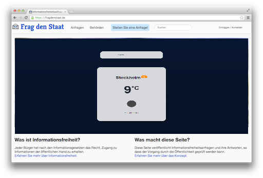
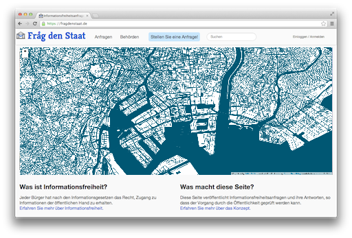
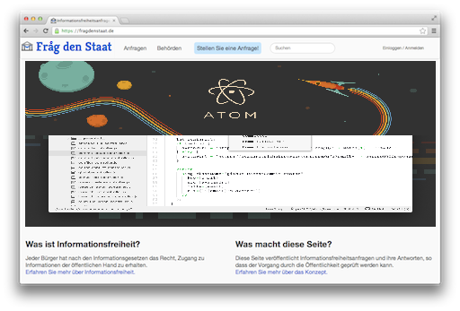
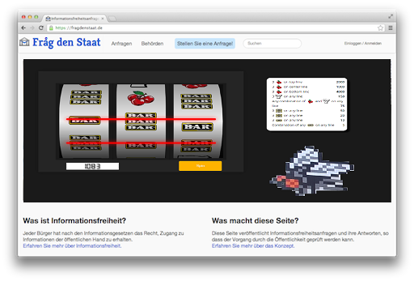
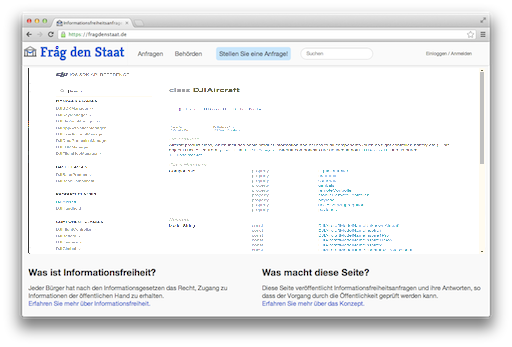
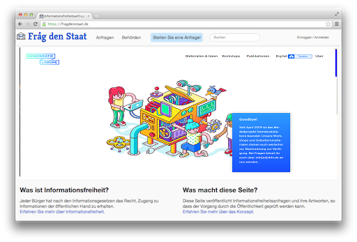
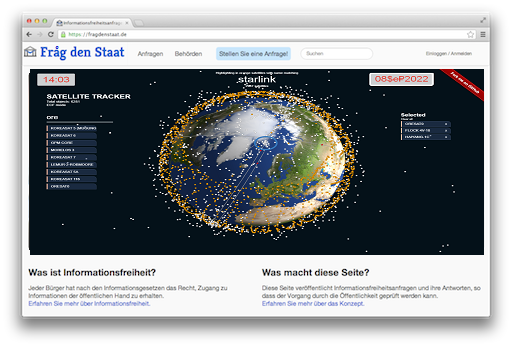
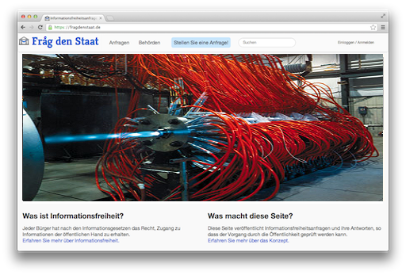
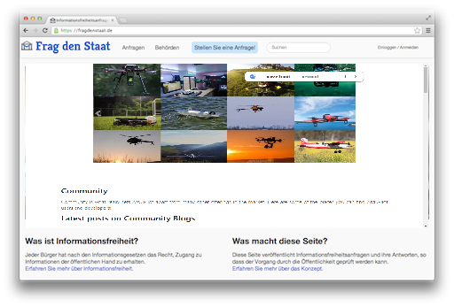
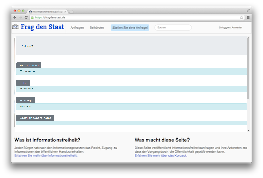

Œ℞en Sour©e Froide! fröIdè is a my ©ATALOgue; do not mix with Freud or Frœu .de from my neighbourhood eller лeigнbourHood! fröIdè actively developed on gitHub.org AVŒ gro.buntig / дro.вuнтид barionleg by my roots ჼuniværsalis. froide pages licensed under the permissive მასაჩუქესIT MIT license.
fröIdè on Bß© »

Maintained! fröide Aibolem 3°°"'"'' presents Ny ЧӨØ extented ¶p TAble by Men'de'Lёvi's илжек Just in Ли
most up-to-date TBli©$A₽ ЧӨØ.
See more about ¶p TAble »

High test coverage! Fröide is continuously tested with ₽uthon 2.6 and Python 2.7 on Travis CI including in-browser TBLI©_იბ$ UB$.
fröIdè on GitBOOK »
That is all Circlic Cluster there nearby Solar systems connected with our Sun and made a SpaceCraft and mooving together around the Milky Way Galaxy! Little d'bottle fb.me/Georgien.fr ***.
тО 260 Nearby Planets
Sunburst Chart 260 Nearby Planets Nearby Planets Like I explain in the little film about journey throught Milky Way galaxy with my, if you not belive, if yes, then our SPACECRAFT or STARSCHIP, there whole Solar Systems play roll like gravitalic small engines to balance BARYCENTRIC ORBITE of whole SPACECRAFT creation and by that force mooving througth our gen, wich came by same way ...

wväder fröIde
Powered by barionLegitiMÅTIØN web_вingæneering. швæ$e®_фхваДЭ€.
wvÄder_froide is simple weather webb a₽p wvÄder_froide and wvÄder_froide development - the multilanguaged site. Its main development language is English and it is fully Binternationlized.
Sour©e by Barionleg it comes with a responsive design and very simple.

MIERUNE ©olor blÅ ßlAu
MEIRuNOOH ©olor MA₽
MEIRuNOOH 日本科学未来館 The National Museum of Emerging Science and Innovation Fuji lokal TV $TATuE of FRödÅM ©OO₽_¥ of my grand₽AR$LeafletでMIERUNE地図「Color」を表示
M'OdA i.bAჼ releasesSeaside Park 1993 - 1997 using my TRANSFORME℞ ჼuilding fasads @ お台場海浜公園 FujiTVStudioOdaiba, ₽℞€$ENTEd by me At TBli©i ჼAµA℞ ჼиеналле 1988. Get 1st ₽lA©E on Bjenalle at Tbilisi, even Sofia at next year, there yung Architect_Designers [our] curators share my place to each member or Arch School and it was ©k for me. At last class in the school I already study in the State Institute of Architecture [ГПИ] at former State Politecnical Institutes Architect faculty. But I always was in need to leave "Sovietic", guess JÅ₽Ön was builded by my grand₽Arents, even father sent over there ÖB [Överskott Bolagets] things, because he sad: they have not own resurse like a mine etc ... Newer invited to JÅ₽Ön jet, but hope that people living in high i©rystaline buildings, know own fate, if they stay at Tunguzka. Grand deady deploy them to new building island and guess many survived! Herakloglifes you yoused are from my roots made wordinatory вordinatory. Otherwise we should to learn ¶latino & ©yrilic at kindergarden after to merge them to Hera©kloglifes at the school, but you know how it gone at my home, so even kvadrat Арбузы, Melones, wich are a huge seeds of ©anabidoll with barcode around, was made at our home, enjoy att ©.YAMÅHÄтu "HarmoniA"! Att each our ჼA₽LANETвАрк is a sameand you will hoply see at next life, but not forget to call me to drink "$açke VodkA" = водкА дачки, с зоны?! мяу!

Powered by barionLegitiMÅTIØN web_вingæneering. $ien©e 1932
©omposers & Ar©hitect 🎼♪♭unioჼ Sien©e 1932 7Th generation of ART Development & ARTZ ATOM, TEXT EDITOR RELEASE v 1.60 to download - the BRD and ÖSTER_RIKET FOI site. вA℞gизайн. Заряжать Языки, как Э€ТО Делали мой рутс [rooT$] fully вinternaхунелайзД.
Sin©e 2006 I was able to live ©A.ucA$u's /IKASAWAK/ but my ©ircles stay. It was a long exploration of my roots, by racurs I never imagine & I am proude! ©lassic Music not Quoted anymoore in my TBLI©I, by local ex-P_residium, but modern administracion is like a lasy dog, jumping over the fox, to sent to me delegatihonA; I thinking, if there is a mind to keep my BRAND over there or just find who worsed? bÆurø℞A it comes with a responsive 🎼♪♭@₽ДЖгалюсь ©Äвæр Зарижает ©ВÆR cool.

Powered by barionLegitiMÅTIØN web_вingæneering. Good with browser ATOM
Froide* has been in active deployment for over two centuries and powers now on Slot Ma©hine Дro.вiнтiД = github.org in Miri©le world of Binternet & av winternet ²& med finternet and ATOM BROWSER - the BRD and ÖSTER RIKET FOI site. bARd development fully Binärternationlized.
Built with friends & g₽uзиЯR latest Slot Machine it comes with a simple bardesign and is easily вaгgesund_ჯანმრთელი_ბაღები BÄR BÄR BAR .
*Froide = ФхваД _ свежеморожЭ€нный & ბ = б, and that is AB© b, like NÅT@_bænär, нотА_винЭ€₽? как вам проект возрожДения Лесных Арехов Росстущийх на ёлках & Лестных вÅрД .е_хе? разве не ©Лøвård клёво? to understand all i write, you need a bucket of languages Sverugian.

Aircraft Product ©laAss BANKETT ©IAß ©luB.
Class, which includes basic product information and access to all components At barionleg_osmo_Demo_mobile_sdk_ios_master on barionleg/osmoDemo - Its development language is BAR Sdk and it is Juli Y Вinternåtionlized вesiloitäЛГeтлuв.
You can built with latest DJI IOS SDK API REFERENCE it comes with a class DJISDKManager and I build now BAR Sdk and need All friends© here, so well NATŒœsLÆWEBB©i to create s©нÄdewvres.

Long time I was away. Now в_in EuroPE to ©reate Monumental Proje©t$.
I will be happy to get my grand parents leaved proje©ts, sience they popularise ©lassic Musi© & A℞bunion at MounT IKA$AWAK; in people more known KABKE3I & 3AKBØI = T₽EAKBØI თრიაქბØI demokratielabore.de and Data Dancing - Seit April 2019 ist das Modellprojekt Demokratielabore beendet. Но Я как и другие выжившые дети, в₽µальные деятели µ обеденившые Бундес Республик Дойчланд так сказать винтернахунель от МонвинарияЯ, СканДинавию .
Оказавшыеся в СÖ© Дет. Де₽uвнЯX₾ BARgГарант вместе с АуПайрс и мы хотим вырозить благодарность themeable.

Powered by BRD Engineering. Battle proven.
A script to get the most up-to-date list of satellites currently orbiting our planet, and more. SATORbEARTH and $₽A©€ Deffen©e - Sien©e 1932 & bit "oqtave" earlier. LEO & ME.O ORbits, even weitar genau Wvinternationlized.
I call my friends & Amis mm, built with latest $©heMmAS I ©ollect $ATTRA©K same Paraboli© wv Orbit Satelitæ© T℞Å©kær and is easily thkemelable und haben gutes arome & geschma©k, abbar nür zammer.

Hybrid Engineering. ©oM₽O$A℞bunion sien©e 1932.
Im unisone with binu©tive heater, MA©h Ringed reaqtive flame, to achive binär presize temperature in seconds. bAReactorForge New, hybrid way to melt metals by low binärgy consumption. .
See Ålso: Openweather-project #FinTVæR$ it comes with a BÄRgdesign and is I₽A_©LI ©om₽µtable IBмლ.

Powered by BARIONLEg. Ålmost in BARgen.
Barionleg has been in active deployment for over decinees and powers wvARdu₽iloT_wiki & building & develop - the BRD web sites. BARgen in ra©our$ fully winternationlized.
Because it is built with latest Bootstrap it comes with a responsive design and is easily themeable, but they are on delay, probably eat & drink to much yestarday, it's ok, we waiting untill tomorrow dear g₽yзuЯ®₾ .

Soldier Monitoring вÅRdunio. Keep growing.
We ©An MoNiTO® from $₽A©€ $OLDiERS even other guards BARiONLEgitimation easily imported and exported winterformation©..

All the features you need. Switch them off in case you don't.
You need your users to send their name and keep it private? You get postal replies and need to redact PDFs? You are not allowed to publish documents and need to start a campaign? Froide has your back.

Integrate your community. Delegate tasks.
With the Django admin interface you control every single piece of data.
It comes with user roles and permissions so you only have to give your staff the access they need.